Problem
Three main issues were slowing us down:
Inefficient patterns
Multiple design patterns used to solve the same problem.
Reduced velocity
Design and technical debt slowing down delivery.
Inconsistencies
Visual and interaction inconsistencies weakening the brand.
Role & team
As the founding product designer, I partnered with engineering to identify which components our roadmap needed first, prioritising them by impact over effort. With the CEO, I made the business case for investing early so we could ship faster and cut design and technical debt before it compounded. This kept the system tied to real product needs.
Goal
Unite departments around a common visual language, deliver consistent user experiences across products, and increase development speed.
The design system
I followed the framework from Alla Kholmatova's Design Systems, breaking the work into four parts:
1 · Design principles
To guide the system, I defined principles aligned with the product's purpose:
Empowering
Nothing makes you feel uncomfortable or like you can't trust the system. The system aids you when needed.
Inclusive
Everything we design should be as usable, legible, and readable as possible. We prioritise accessibility over beauty.
Conversational
The system speaks the user's language. Our use of copy and interactions breathes personality into our product and allows us to communicate with users in easily understood ways.
2 · Functional patterns
I audited the UI, grouped similar components, and defined reusable patterns for inputs, lists, navigation and pricing.
Interface audit
Auditing all interface elements allowed me to uncover inconsistencies and expose redundancies.
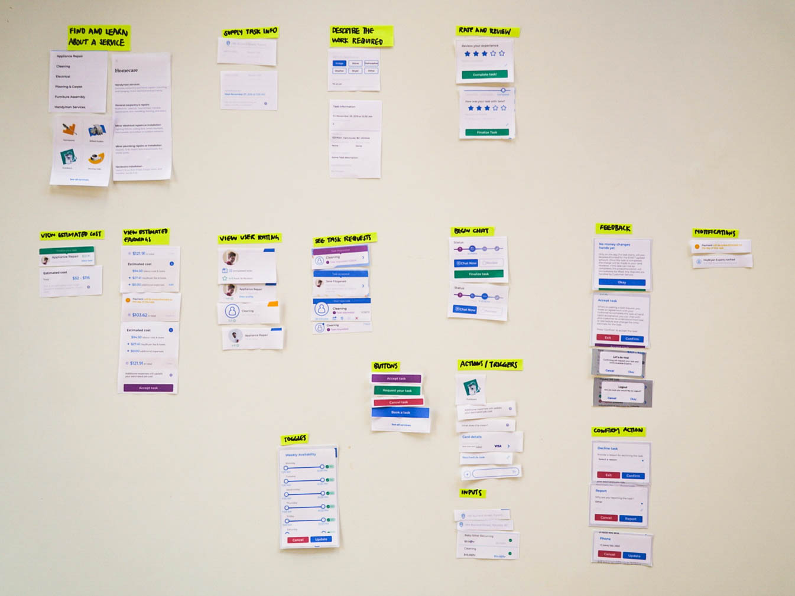
Defining functional patterns
After collecting and grouping all elements by purpose, I decided whether to merge patterns or keep them separate by mapping out each component's content structure. Typically, elements that share the same underlying structure can be merged into one pattern.
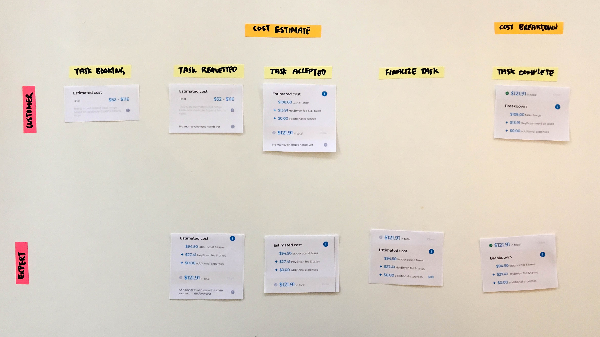
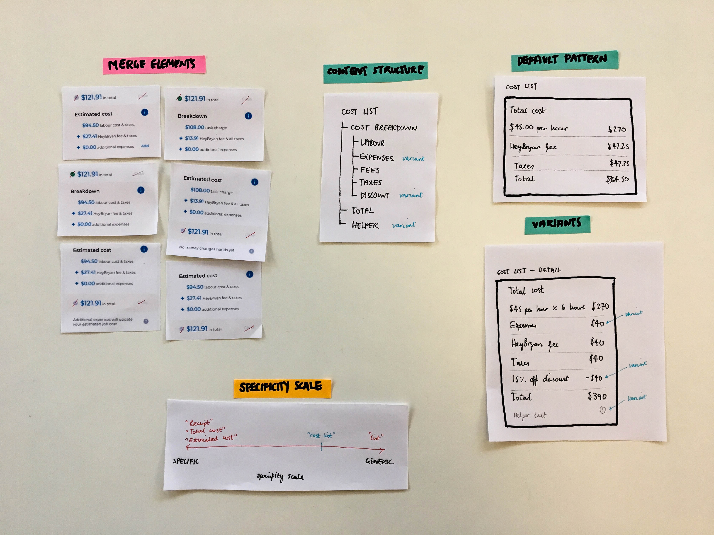
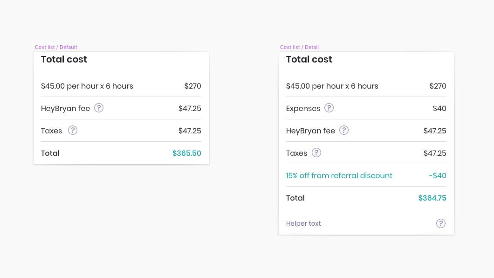
3 · Perceptual patterns
I standardised typography, colour, spacing and tone of voice to create a unified feel.
Identifying signature patterns
Pinning down distinct elements that convey the brand.

Style inventory
I then grouped individual style elements by purpose, then defined patterns.
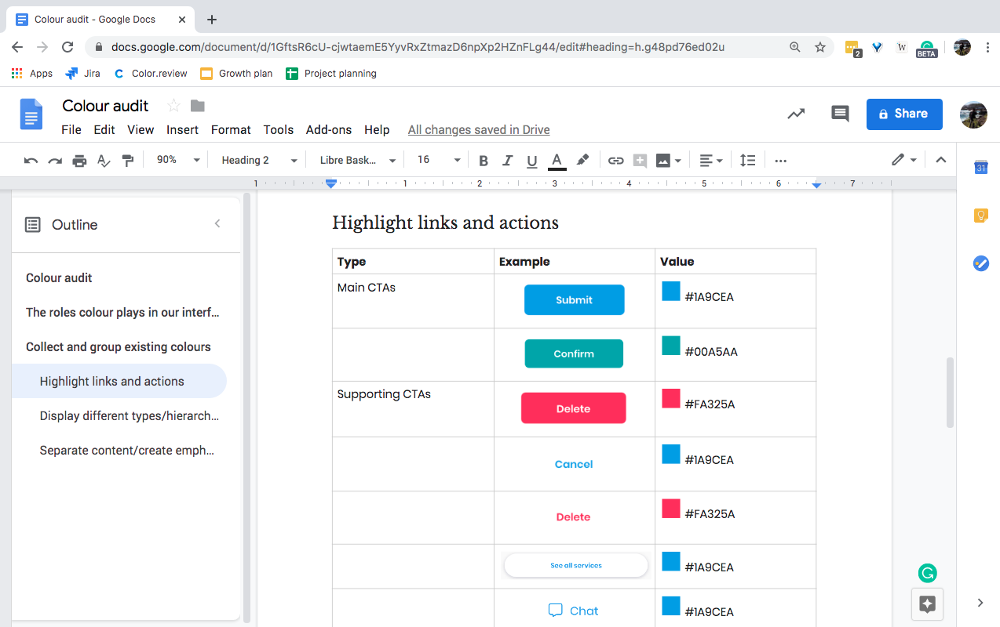
4 · Pattern library
I documented the system in a shared Google Doc with naming, usage, and structure guidelines so the team could easily understand and apply it.
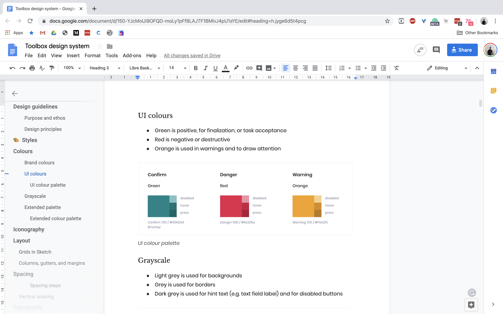
Impact
In the next sprint we delivered faster and with fewer handover issues. The system gave us a shared design vocabulary and a foundation for future work.
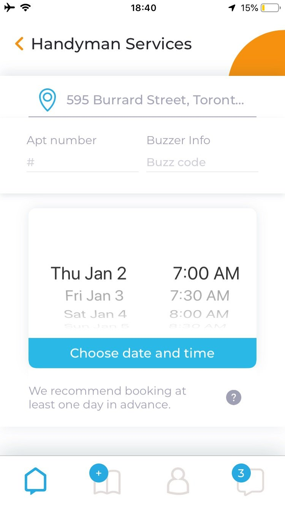
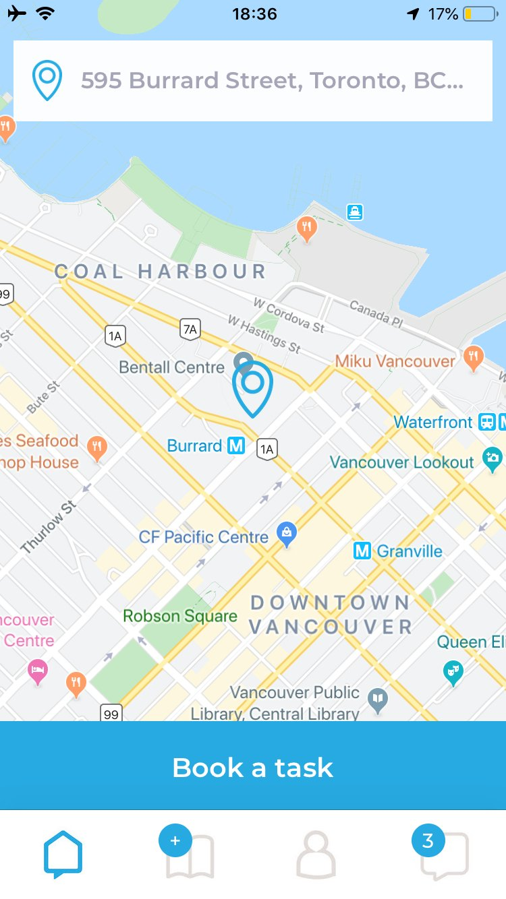
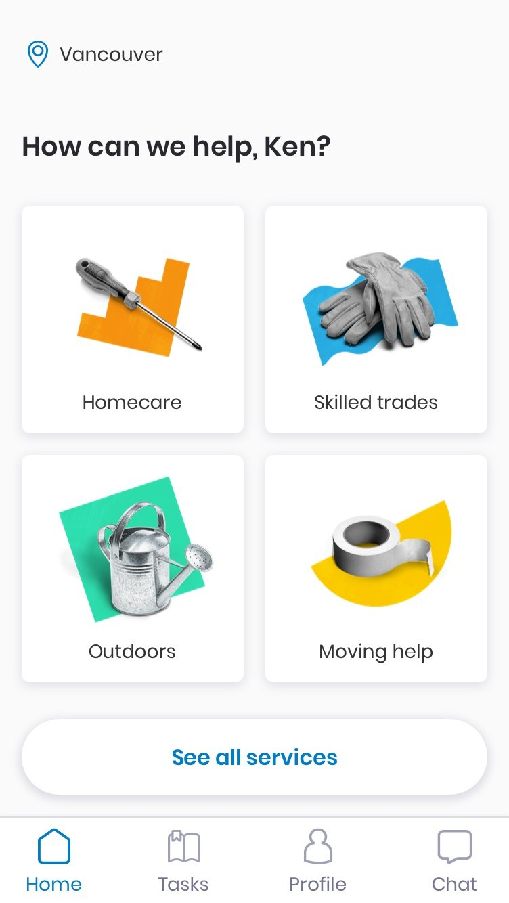
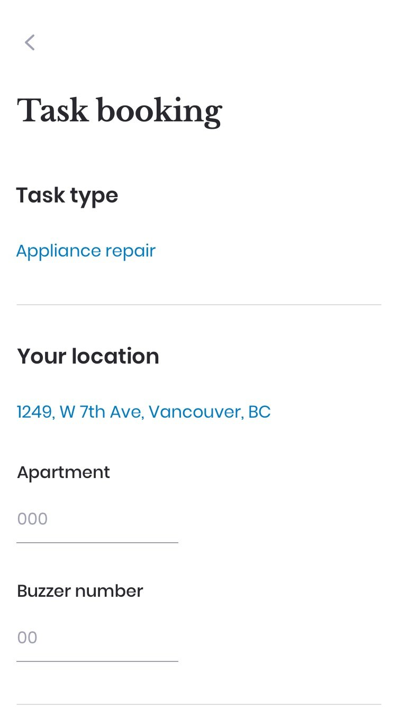
Outcome
The system helped us work more consistently, build faster, and reduce design debt, making future design work easier to scale.
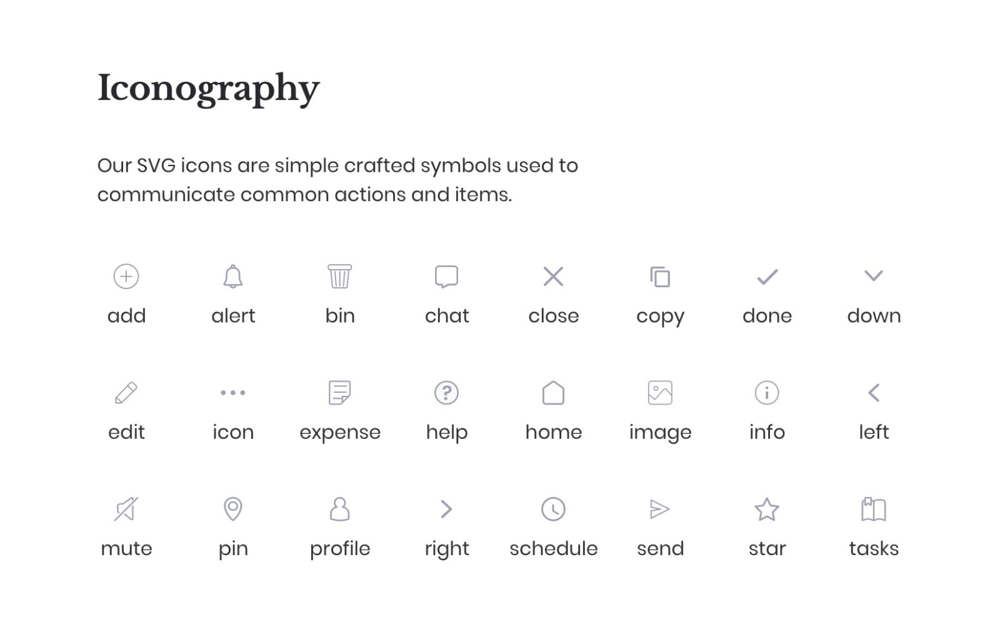
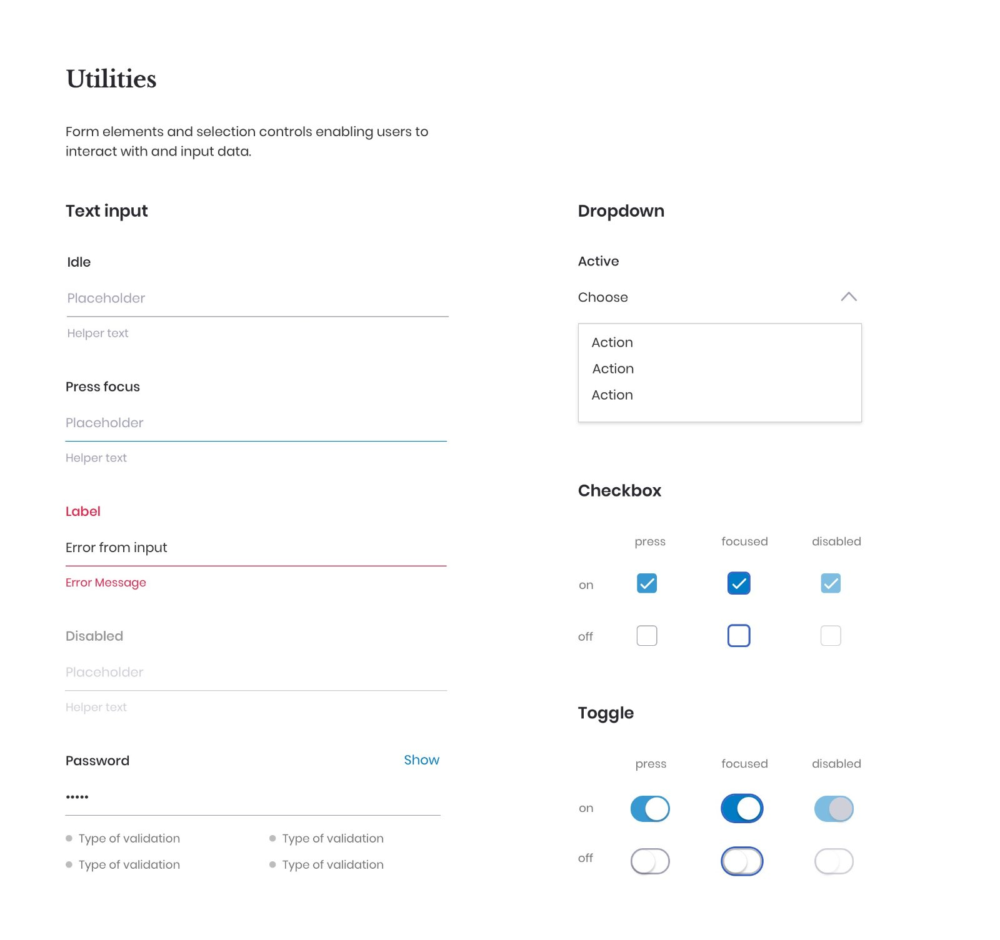
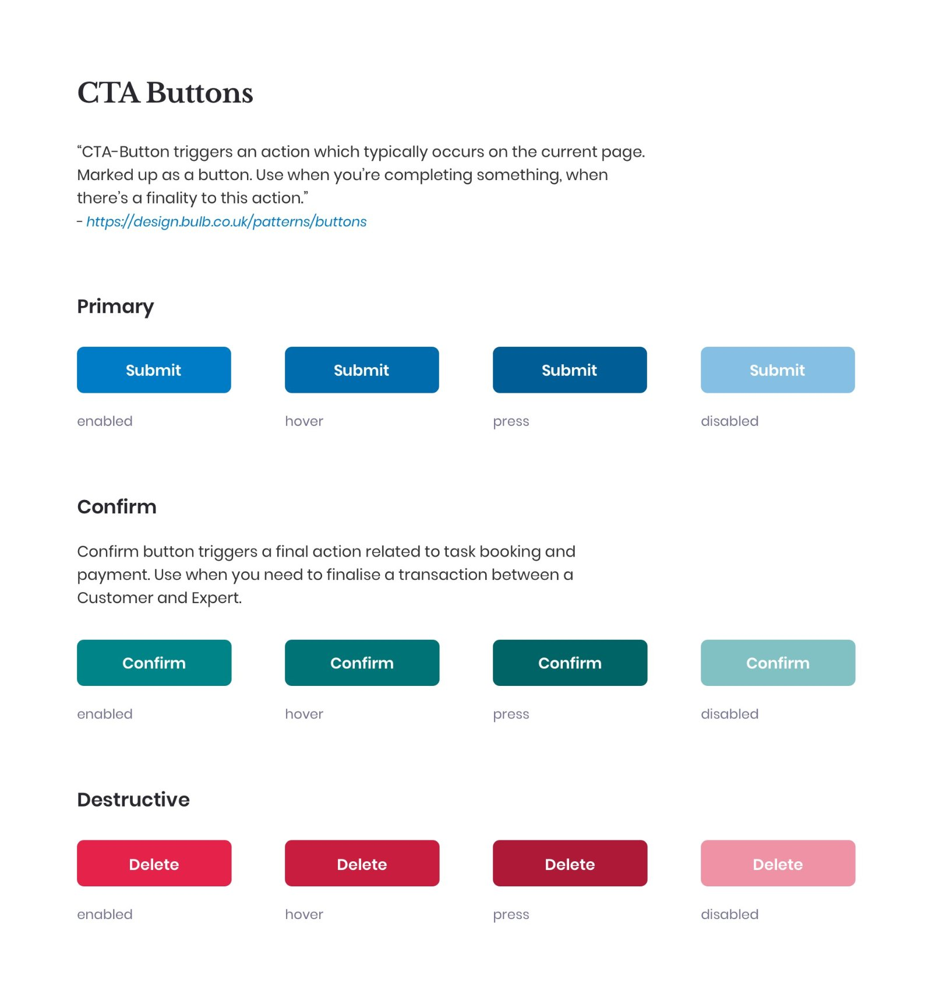
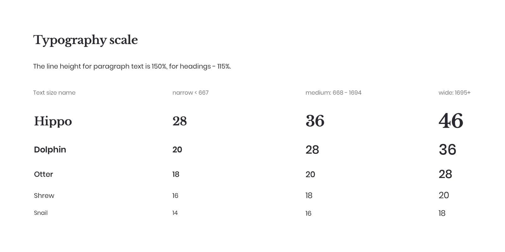
Learnings
Collaboration was essential as it ensured the system embodied the right values and solved user problems that directly impact business goals.
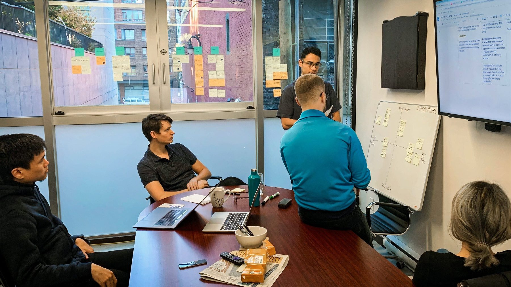